ЕКОМ+ от MVP до единой платформы для управления маркетплейсами
Как мы проверяли гипотезы, находили реальные потребности пользователей и развивали SaaS-продукт для управления товарами, заказами и логистикой.
Моя роль
Lead / Product Designer
Команда
Product · Business · Analytics · QA · Backend · Frontend · Design
Формат: SaaS / Web / Responsive
01 · Контекст
Один интерфейс вместо нескольких кабинетов маркетплейсов
Мы создавали SaaS-платформу для продавцов, которые работают сразу с несколькими маркетплейсами. Продукт должен был объединить основные операции в одном интерфейсе: создание и редактирование товаров, управление ценами и остатками, перенос товаров между маркетплейсами, работу с заказами, оформление доставки FBS, отправку товаров на склады маркетплейсов по FBO и работу со службами доставки.
Главная задача продукта — сократить количество ручной работы и избавить продавца от постоянного переключения между разными системами.
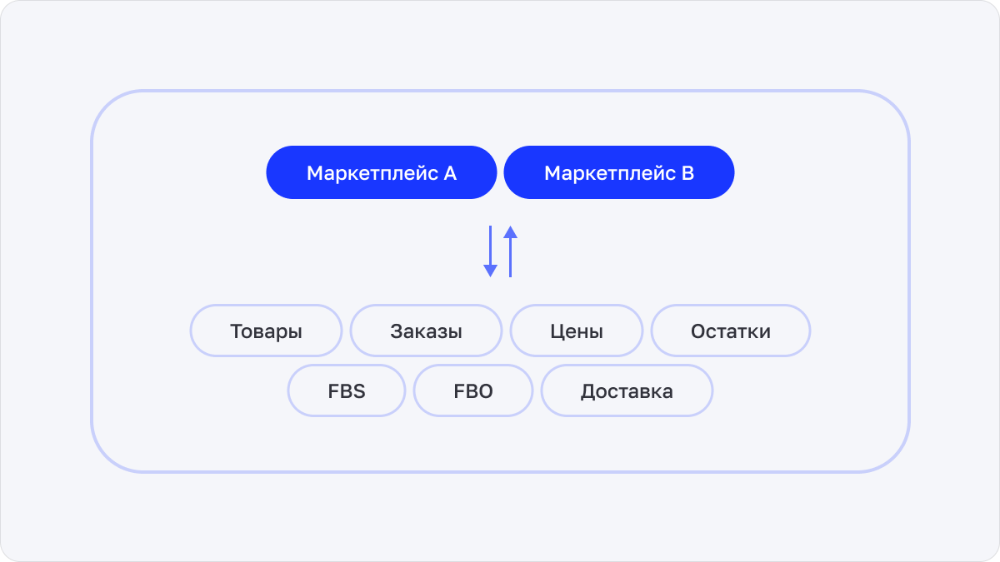
02 · Моя роль
От концепции MVP до развития целого продукта
Я подключился к проекту на старте стартапа.
На момент начала работы у команды уже были: техническое задание, исследования пользователей, анализ конкурентов и сформированные продуктовые гипотезы.
Моей задачей было превратить эти вводные в понятный и масштабируемый пользовательский опыт.
На первом этапе я отвечал за: концепцию → UX → UI → MVP → лендинг → маркетинговые материалы
На старте я также сформировал визуальную основу продукта: разработал логотип и визуальное направление, которое затем использовалось внутри продукта и во внешних коммуникациях.
После создания MVP в команду подключился второй дизайнер. Я передал ему направление служб доставки, а сам продолжил отвечать за ключевые пользовательские сценарии, основные layout'ы, новые продуктовые функции и целостность продукта.
Также в моей зоне ответственности были взаимодействие с разработкой, аналитиками, тестированием и бизнесом, а также поддержание консистентности интерфейса.
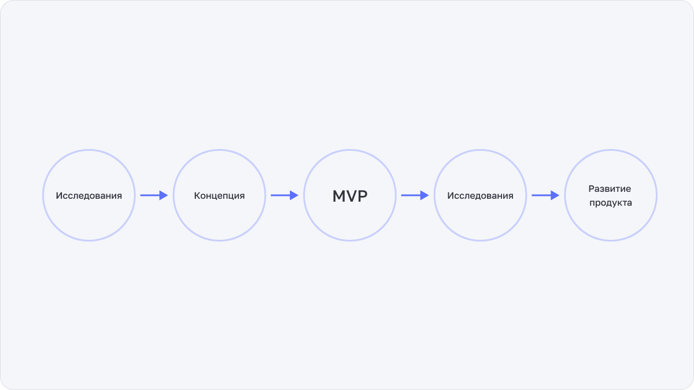
03 · От гипотез к MVP
Собрали основу продукта вокруг ключевых операций продавца
На первом этапе мы сфокусировались на основных сценариях, которые должны были войти в MVP.
Товары
Создание, редактирование и импорт.
Цены и остатки
Массовое изменение параметров.
Перенос
Перенос товаров между маркетплейсами.
Заказы
Работа с заказами.
FBS / FBO
Оформление доставки и отправка на склад.
Логистика
Службы доставки и калькулятор тарифов.
Также в MVP вошли Dashboard и раздел с государственной поддержкой для малого бизнеса.
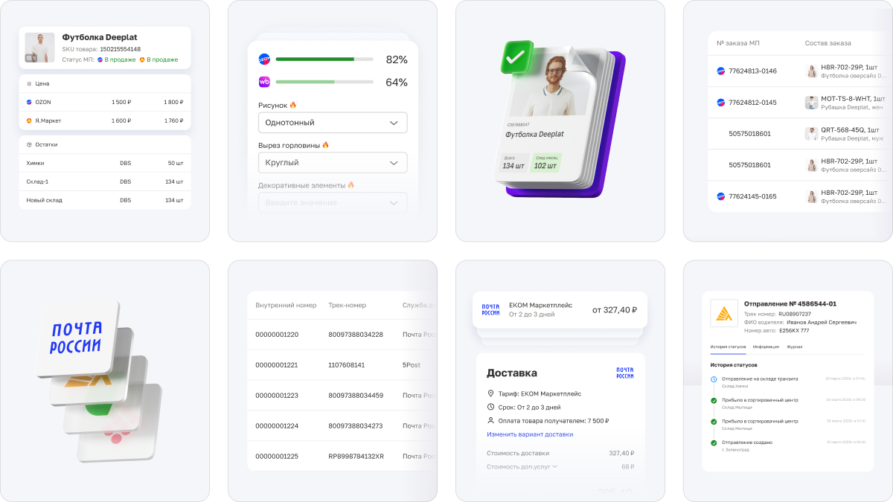
04 · Первая гипотеза
Мы предполагали, что пользователи приходят за созданием товаров и операционным управлением каталогом
Рынок уже был сформирован и занят существующими решениями. Поэтому нам было недостаточно просто повторить базовый набор функций конкурентов — нужно было найти точку входа, которая могла бы дать пользователю достаточно сильную причину попробовать новый продукт.
На старте мы предполагали, что такой точкой входа могут стать базовые задачи продавца: создание товаров, работа с ценами и управление остатками.
Эта гипотеза легла в основу первоначального фокуса MVP и структуры основных сценариев.
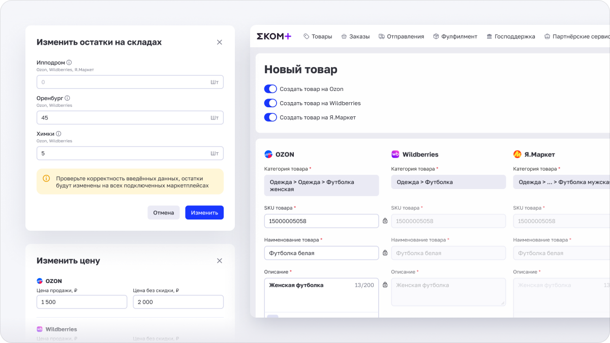
05 · Что оказалось действительно важно
Пользователи пришли за массовым переносом товаров между платформами
После запуска мы увидели, что реальная потребность пользователей отличается от нашей первоначальной гипотезы.
Пользователи приходили не столько для создания нового каталога или ежедневной работы с ценами и остатками, сколько для решения конкретной задачи: быстро перенести уже существующие товары с одной платформы на другую.
Это стало важным продуктовым инсайтом. В условиях уже занятого рынка именно этот сценарий мог стать нашей точкой входа и способом дать пользователю понятную ценность с первого использования.
Первоначальный фокус
Создание товаров Цены Остатки
Реальная потребность
Массовый перенос Платформа A → Платформа B
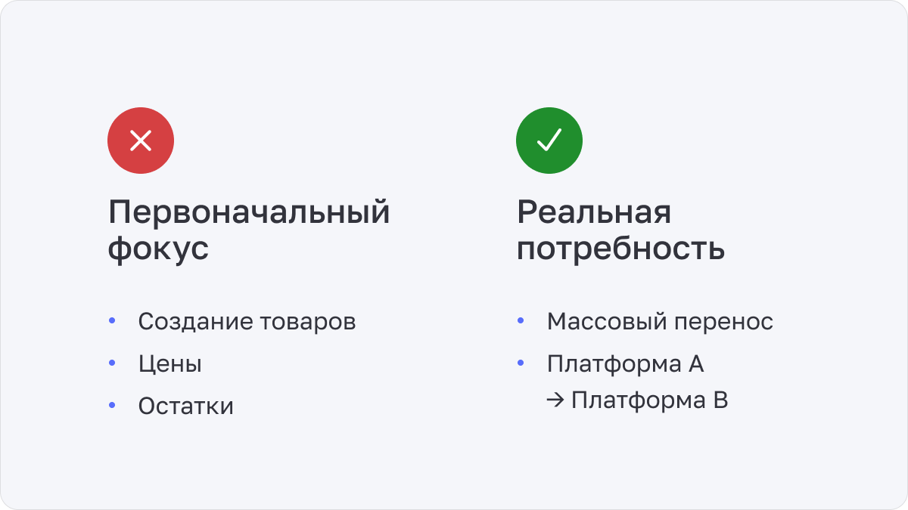
06 · Deep dive · Массовый перенос товаров
От единичной операции к массовому сценарию
Главная сложность заключалась в том, что пользователь работает не с одним товаром, а сразу с десятками или сотнями позиций.
Поэтому интерфейс должен был позволять быстро выбрать нужные товары, видеть их текущее состояние, работать с большим количеством позиций одновременно, массово изменять данные, понимать, какие товары успешно перенесены, и быстро находить ошибки и проблемные позиции.
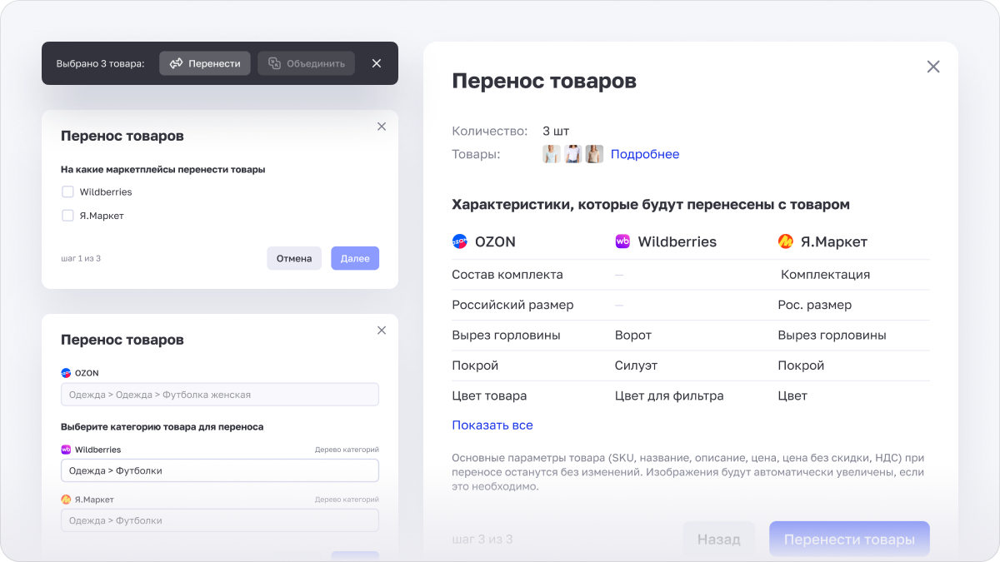
07 · Работа с большим количеством данных
Таблица стала основным рабочим пространством
Пользователь работает не с одним товаром, а с большим каталогом. Поэтому таблица стала не просто способом отображения данных, а полноценным пространством для управления товарами.
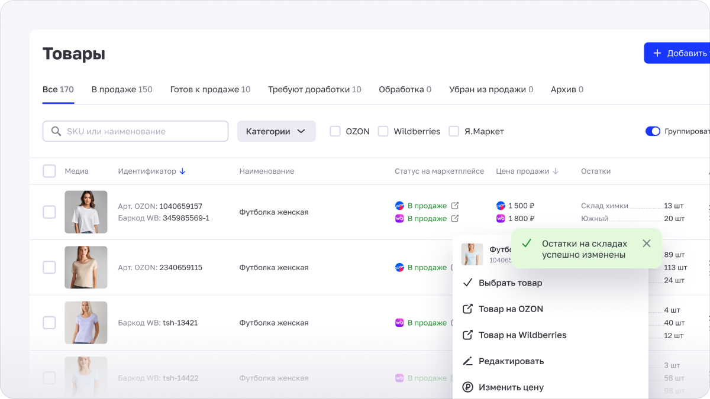
08 · Массовые операции
Сложные действия — через один рабочий контекст
Вместо последовательного редактирования каждого товара пользователь мог работать сразу с группой.
Например: выбрать товары → изменить цену → подтвердить → получить результат.
Тот же принцип использовался для переноса и других массовых операций. Это позволило значительно сократить количество повторяющихся действий и сделать работу с большим каталогом более предсказуемой.
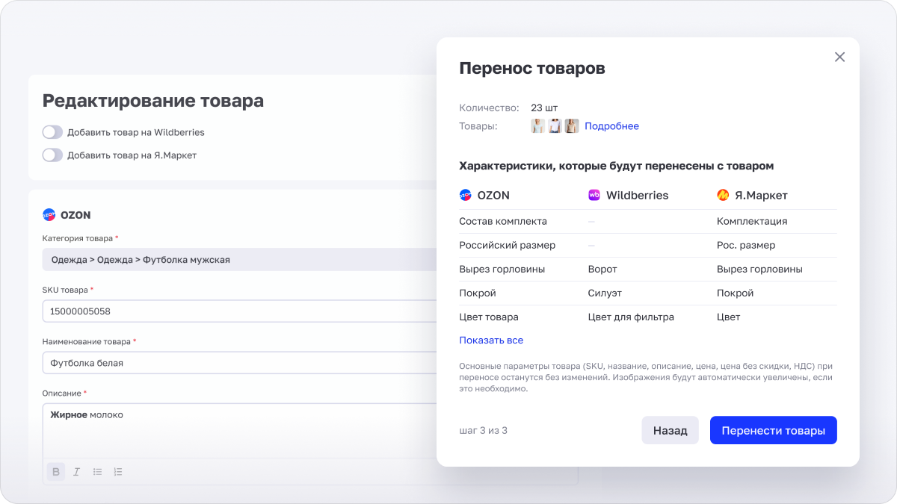
09 · Логистика
Логистика стала отдельным продуктовым направлением
Сначала службы доставки были частью общей экосистемы маркетплейсов. В процессе развития мы увидели, что этот функционал может существовать как самостоятельное направление: пользователь может заниматься только доставкой, даже без постоянной работы с маркетплейсами.
Внутри направления появился собственный сценарий: параметры отправления → доступные тарифы → сравнение → выбор → оформление.
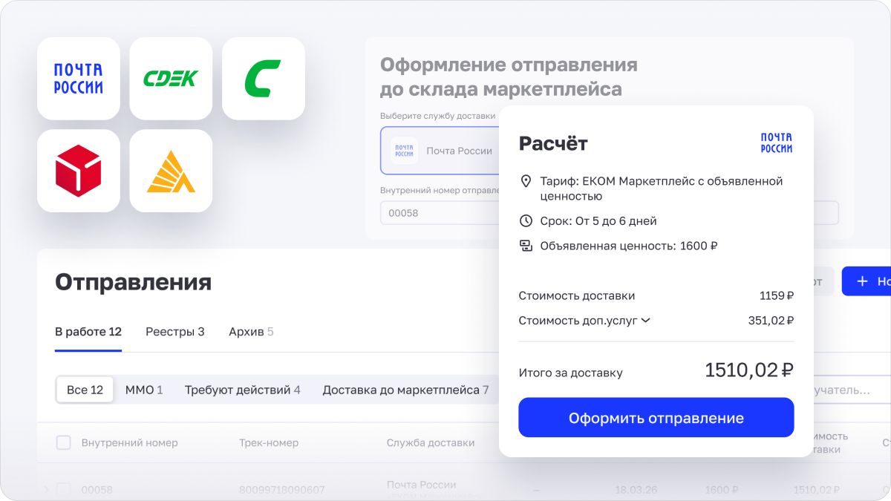
10 · Калькулятор доставки
Не просто оформить отправление, а выбрать оптимальный вариант
При оформлении доставки пользователь мог сравнить доступные тарифы.
Мы показывали варианты с учётом стоимости и других параметров отправления, чтобы пользователь мог выбрать подходящий способ отправки.
Таким образом, калькулятор стал не просто формой расчёта, а инструментом принятия решения.
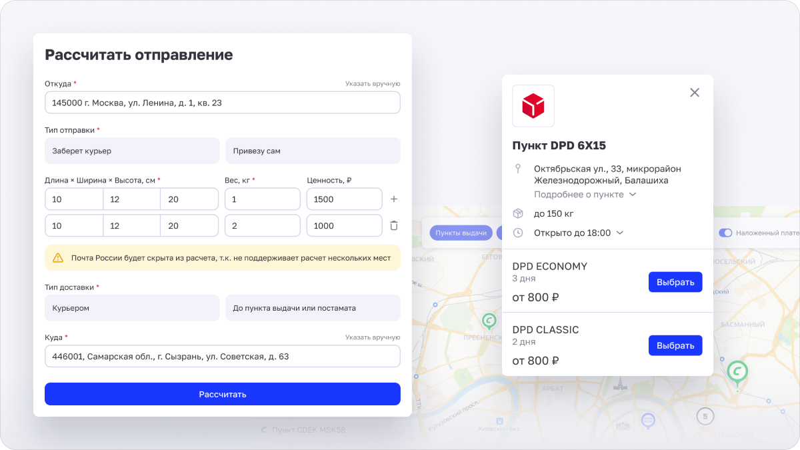
11 · FBS / FBO
Один продукт — разные логистические сценарии
Мы прорабатывали оба основных сценария работы продавца.
FBS
Товар хранится у продавца и отправляется после получения заказа.
FBO
Товар заранее отправляется на склад маркетплейса.
Несмотря на различия в процессе, пользователь должен был воспринимать их как части одной экосистемы. Поэтому мы стремились сохранить общую логику взаимодействия и визуальную консистентность между сценариями.
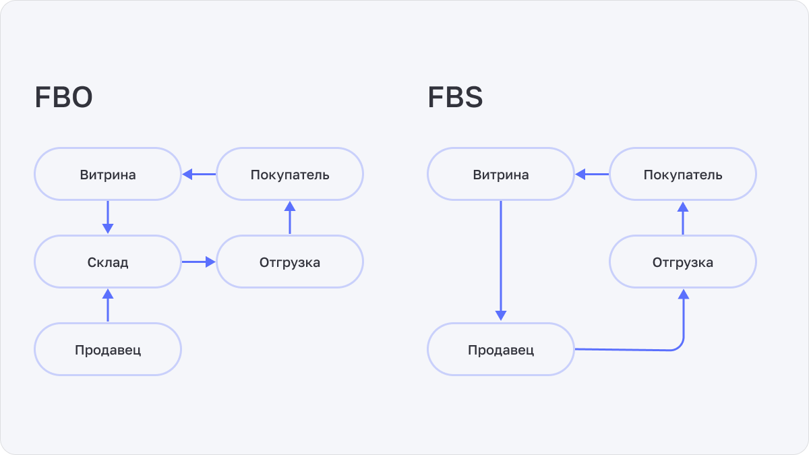
12 · После MVP
MVP стал началом следующего цикла продукта
После запуска мы перешли от формирования основной функциональности к постоянной итерации.
Мы использовали несколько источников данных: качественные исследования, количественные исследования и обратную связь через форму внутри продукта.
Качественные исследования помогали понять мотивацию пользователей, проблемы и контекст использования. Количественные — оценить масштаб проблем и приоритетность задач.
Полученные данные использовались для доработки существующих сценариев, исправления UX-проблем, формирования новых гипотез и приоритизации нового функционала.
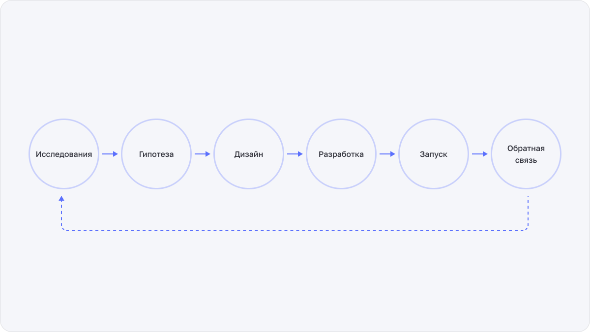
13 · Responsive
Полноценный продукт, а не мобильная версия «для галочки»
Мы одними из тех, кто сделал полноценный адаптив продукта. Основные сценарии должны были оставаться рабочими не только на desktop, но и на мобильных устройствах.
Особенно сложной задачей были большие таблицы и массовые операции. Нужно было сохранить возможность работать с большим количеством данных, не превращая мобильный интерфейс в уменьшенную копию desktop-версии.
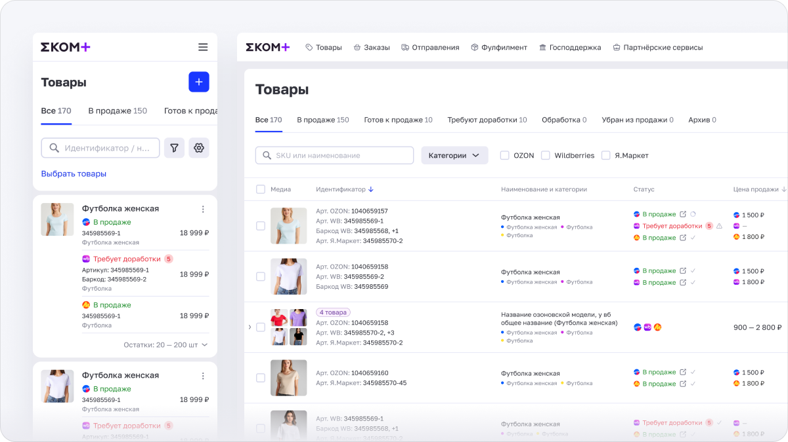
14 · Масштабирование команды
Вместе с продуктом менялась и моя роль
После создания MVP в команду подключился второй дизайнер. Мы разделили зоны ответственности.
Я — Lead / Product Designer
Продукт Ключевые сценарии Layout Консистентность Новые функции
Второй дизайнер
Логистика Службы доставки Развитие направления
Я продолжил отвечать за ключевые пользовательские сценарии, новые функции, основные layout'ы и общую целостность продукта.
15 · Design beyond product
Часть моей работы выходила за пределы SaaS
В команде не было отдельного маркетинга, поэтому значительная часть задач по внешней коммуникации также была на мне: email-рассылки, рекламные баннеры, материалы для таргетированной рекламы, промоматериалы и материалы для выставок.
На старте я сформировал визуальную основу бренда, включая логотип и визуальное направление. Затем этот язык развивался в продукте, 3D-иллюстрациях и внешних коммуникациях.
Это позволяло сохранять единый визуальный образ продукта во всех точках контакта с пользователем.
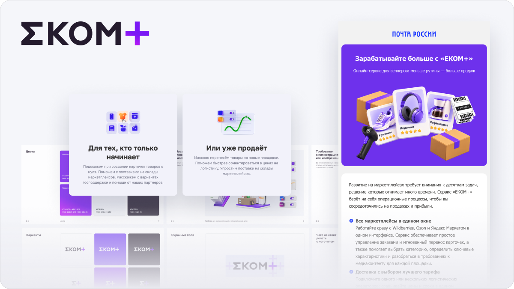
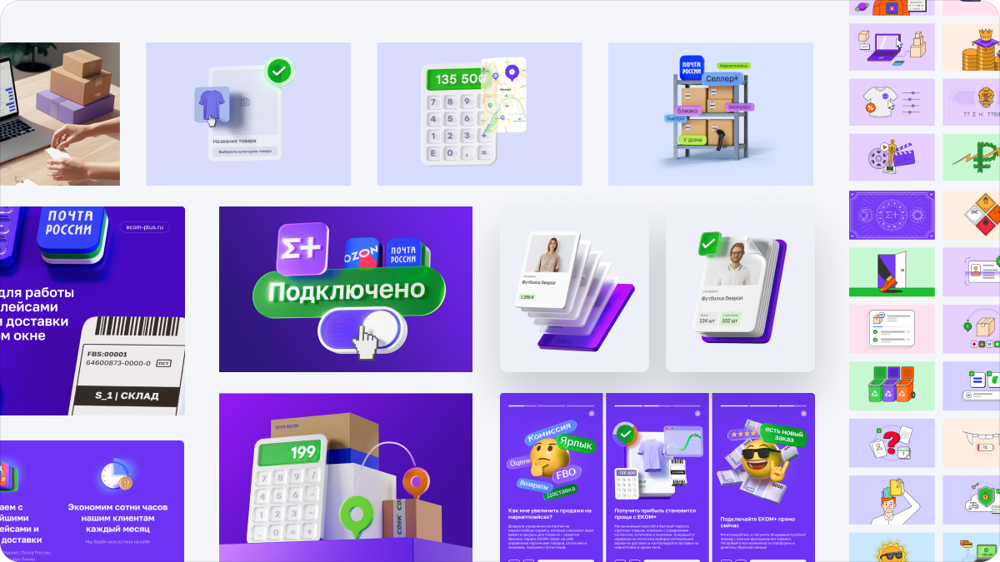
16 · Design как инструмент оптимизации бизнеса
Я оптимизировал не только интерфейс, но и процессы вокруг продукта
Моей задачей было не только создавать интерфейсы. Я старался смотреть на дизайн шире — как на инструмент оптимизации процессов и расходов команды.
Часть маркетинговых 3D-иллюстраций изначально создавалась вручную в Cinema 4D: моделирование, материалы, рендер и последующие правки занимали значительное количество времени.
Со временем я перевёл часть процесса на AI-assisted workflow, оставив за собой арт-дирекцию, отбор и финальную доработку. Это позволило сократить ручную работу и быстрее производить визуальные материалы для маркетинга.
Для меня это было продолжением продуктового подхода: искать не только более удобный интерфейс для пользователя, но и более эффективный способ работы внутри самой команды.
17 · Результат
Из MVP в единую экосистему
За время работы продукт прошёл путь от первоначальной концепции MVP до полноценной SaaS-платформы, объединяющей управление товарами, заказами и логистикой.
Но одним из самых важных результатов стал не объём реализованного функционала, а изменение нашего понимания основной ценности продукта.
Мы начинали с гипотезы:
«Пользователю нужен инструмент для создания товаров, работы с ценами и остатками».
После запуска увидели:
«Пользователю важнее быстро и массово перенести уже существующие товары с одной платформы на другую».
В условиях уже занятого рынка этот сценарий стал одной из наших ключевых точек входа и направлений развития продукта.
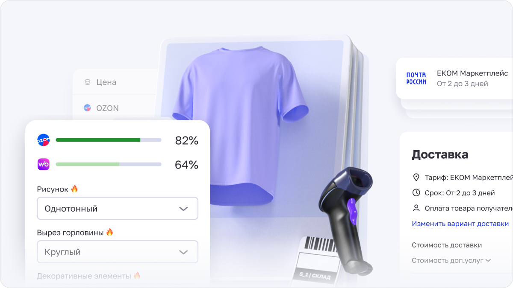
18 · Что я вынес из проекта
От интерфейсов — к продукту
01 — MVP не должен быть финальной версией. Запуск позволяет проверить то, что невозможно полностью понять на этапе гипотез.
02 — Главная функция не всегда та, которую мы планируем. Реальное поведение пользователей может изменить приоритеты продукта.
03 — Сложные SaaS-продукты требуют системного подхода. Когда количество функций растёт, консистентность и единая логика взаимодействия становятся такой же важной задачей, как создание новых функций.
04 — Роль дизайнера меняется вместе с продуктом. Я начинал с концепции и интерфейсов MVP, а по мере роста продукта стал отвечать за более широкую систему: ключевые сценарии, layout'ы, консистентность, развитие продукта, работу второго дизайнера и оптимизацию процессов.
«Главным результатом я считаю не количество созданных экранов, а способность вместе с командой находить реальную ценность для пользователя и перестраивать продукт вокруг неё».